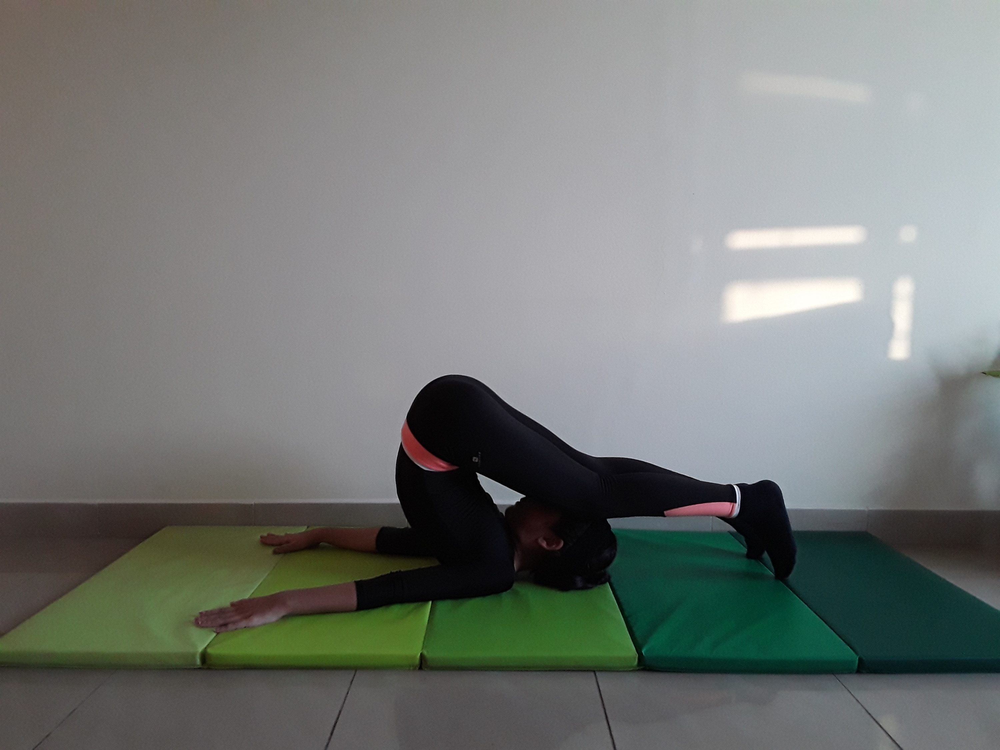

PLOW POSE

Steps to perform Downward Frcing Dog Pose
- From Salamba Sarvangasana, exhale and bend from the hip joints to slowly lower your toes to the floor above and beyond your head. As much as possible, keep your torso perpendicular to the floor and your legs fully extended.
- With your toes on the floor, lift your top thighs and tailbone toward the ceiling and draw your inner groins deep into the pelvis. Imagine that your torso is hanging from the height of your groins. Continue to draw your chin away from your sternum and soften your throat.
- You can continue to press your hands against the back torso, pushing the back up toward the ceiling as you press the backs of the upper arms down, onto your support. Or you can release your hands away from your back and stretch the arms out behind you on the floor, opposite the legs. Clasp the hands and press the arms actively down on the support as you lift the thighs toward the ceilin.
- Halasana is usually performed after Sarvangasana for anywhere from 1 to 5 minutes. To exit the pose bring your hands onto your back again, lift back into Sarvangasana with an exhalation, then roll down onto your back, or simply roll out of the pose on an exhalation.